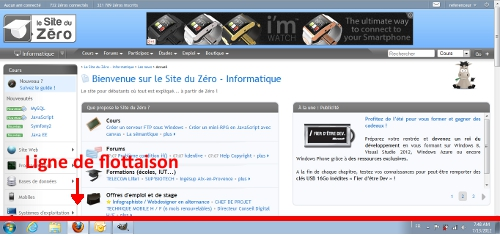
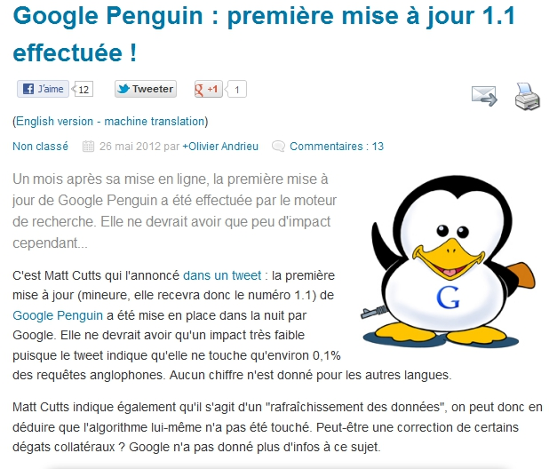

Si vous êtes là, c'est que vous comptez améliorer le référencement votre (futur) site web. Cela tombe bien c'est ce que nous allons voir tout au long du tutoriel. :)
Dans ce tutoriel, nous verrons ce qu'il faut faire et ne pas faire en matière de référencement. Nous parlerons beaucoup de Google, puisque c'est le principal moteur de recherche en France loin devant Bing et les autres. J'apporterai des petites précisions quand les choses seront différentes pour d'autres moteurs.
Nous aurons besoin de modifier du code HTML. Si vous n'y connaissez rien, je vous conseille tout de même de lire le début du tutoriel de Mathieu Nebra sur le HTML. Vous n'aurez pas besoin d'être un expert mais juste de savoir ce qu'est une balise meta, une balise title, une balise de lien, les balises de titres et enfin la balise d'image ainsi que ses attributs. Lisez la 1ère partie du tutoriel, ça sera suffisant.
Préparez vous à améliorer votre référencement
Il faut savoir que le référencement n'est pas une science exacte. Les algorithmes ne sont pas connus des référenceurs. Parfois Google communique sur certains changements, mais personne ne connaît tous les éléments qui entrent en jeu, ni leur poids sur le positionnement d'un site sur un moteur de recherche, hormis les ingénieurs de ces entreprises bien évidemment. :) Afin de découvrir les secrets des algorithmes, les experts en référencement font des tests sur certains points et en tirent des conclusions.
Il n'y a donc pas de méthode exacte. Si vous interrogez différents experts pour qu'ils référencent au mieux votre site, ils ne feront pas forcément les mêmes choix.
Après cette petite mise au point nous pouvons commencer. Préparez vous à entrer dans le monde merveilleux du référencement. ^^
Avant de commencer, il faut savoir que nous ne travaillerons pas sur le référencement de votre site web mais sur l'optimisation de plusieurs pages de votre site. Cette première notion est importante. ;)
Il y a 3 étapes importantes lors du référencement d'un site Web :
La définition de la stratégie.
La mise en place de la stratégie.
L'analyse et le suivi des résultats.
Après analyse, vous tirerez des conclusions et retravaillerez sur certains points de votre stratégie. Nous verrons ces points au fur et à mesure du tutoriel.
Dans ce chapitre, nous verrons 2 choses à savoir avant de se lancer dans le monde du référencement.
Nous parlerons dans un premier temps d'ergonomie. Inutile d'attirer pleins de visiteurs s'ils ne restent pas non ? ^^
Ensuite, nous verrons quelques notions de référencement, même les plus basiques, qui peuvent vous sembler évidentes. Ce qui vous parait évident, ne l'est peut-être pas pour quelqu'un d'autre.
Avant de commencer l’optimisation de votre site pour son référencement, la première étape est d’avoir un site ergonomique. Un site web doit à la fois proposer un contenu intéressant, c'est-à-dire utile à l’internaute et être pratique d’utilisation par la même occasion. C’est là qu’intervient l’ergonomie.
L’ergonomie d’un site peut se définir par sa facilité d’utilisation par le plus grand nombre de personnes (avec des configurations différentes) avec un confort et une efficacité maximum.
La toute première chose à vérifier est la page d'accueil, c'est-à-dire la première page, celle qui est accessible à cette adresse : www.votresite.fr. A bannir : Toutes les pages qui proposent une introduction avec une petite animation, et un lien "entrer sur le site" ne sont vraiment pas ergonomique. C'est peut-être joli mais c'est complètement inutile. Vous rajoutez un clic en plus à l'utilisateur, et pour les moteurs de recherche, la page d’accueil n'est pas du tout optimisée.
Voici un autre exemple de page d'accueil qui n'est pas ergonomique. :waw:
En plus d'un lien "cliquez-ici" pour accéder au site, on nous demande de débloquer les popup. Rien de plus lourd pour un internaute que des popups qui sortent de nulle part sur votre écran. Alors les publicités dans les popups et les publicités qui s'affichent d'un seul coup au milieu de l'écran, vous pouvez oublier.
La règle des 3 clics, utile ou pas ?
La règle des 3 clics permet aux internautes de trouver l’information recherchée sur votre site en maximum 3 clics.
L’avantage principal est que l’information est trouvée rapidement par l’internaute.
Il est inutile et non recommandé pour des sites ayant peu de contenu de construire son site avec 5 ou 6 niveaux de hiérarchie. Bien entendu, il y a des fois où vous ne pouvez pas faire autrement. On ne tiendra pas rigueur aux sites tels Cdiscount ou Amazon avec des milliers de produits d’avoir plusieurs niveaux de hiérarchie.
Pourquoi seulement 3 clics ?
Tout simplement car l’internaute est pressé. S’il ne trouve pas ce qu’il recherche rapidement, il s’en va et va chercher ailleurs. Cette règle n'est pas de moi : il y a eu des études qui ont conduite à cette règle... mais il était surtout important il y a 10 ans quand le débit n'était pas aussi rapide et que le temps de chargement des pages était beaucoup plus long. ;)
Selon cette même étude, mettre en place la règle des 3 clics sur vos pages faciliterait leur indexation. Mais on verra dans ce tutoriel comment indexer toutes vos pages facilement. ;)
Cette règle possède ses détracteurs. Des études prouvent que les internautes ne quittent pas un site au bout de 3 clics et c'est plutôt logique, non ? Comme je vous l'ai dit, si l'internaute sait où il va sur votre site, ça ne le dérangera pas de faire 5 clics, 6 clics ou plus.
En gros le but n’est pas de faire un site avec toutes les pages accessibles en 3 clics, l'objectif est d'être clair. Si votre page est accessible en 4 ou 5 clics et que vous ne pouvez pas faire autrement au vue de toutes vos pages, ce n’est pas grave tant que l’accessibilité est facile et logique.
Pour résumer, construisez un site le plus accessible, clair et confortable possible pour l'utilisateur.
la ligne de flottaison
La ligne de flottaison est une ligne virtuelle qui définit la frontière entre ce que l’utilisateur voit et ce qu’il ne voit pas en arrivant sur un site Internet.
A l’arrivée sur un site, ce qui s’affiche sur votre écran se trouve au dessus de la ligne de flottaison. Le contenu caché, qui est visible en scrollant, se trouve en dessous de la ligne de flottaison.

La ligne de flottaison est en rouge
La taille de la ligne de flottaison dépend de la résolution de l’écran de l’internaute, mais également de son navigateur. La personnalisation du navigateur et les barres d’outils jouent également un rôle. Selon, tous ces paramètres, indépendants de votre volonté, les internautes ne verront pas tous la même chose en arrivant sur votre site.
Navigateur Firefox
Navigateur Internet Explorer
Aucune barre personnelle n'a été utilisée et les 2 navigateurs n'affichent pas la même chose. Sur Firefox, la ligne de flottaison se trouve plus haute. Mais l'utilisateur peut également supprimer la barre de menu, ce qui permettrait de descendre la ligne de flottaison. Vous avez compris que vous ne maitrisez pas tous les éléments.
Je prends quelques lignes pour vous raconter la petite histoire de la ligne de flottaison. En anglais, ligne de flottaison se dit "fold". Cette notion ne vient pas du tout des sites web mais du monde de l’édition avec les journaux.
Quelle est le rapport avec mon site web ? o_O
Quand un journal est plié en deux, il y a une partie visible et une partie non visible. Je sens que vous voyez où je veux en venir ? Les éditeurs faisaient apparaître les gros titres et les informations importantes en haut du journal (dans la partie visible) afin de donner envie aux personnes, qui verront ces informations, de l’acheter.
C’est exactement le même principe pour les sites web. Les informations importantes doivent apparaître en haut de pages. Vous devez à la fois optimiser le début de votre contenu pour les moteurs de recherche (c’est ce que nous verrons en détail par la suite) et à la fois accrocher le lecteur pour le convaincre de lire la suite.
Comment savoir alors où définir notre ligne de flottaison puisque les configurations changent ?
C'est une très bonne question. Les résolutions n‘étant pas les mêmes, il vous suffit de vous baser sur la résolution la plus basse, c'est-à-dire 1024x 768px. Je ne compte pas la résolution 800x600px qui est peu utilisée. On définit en général la ligne de flottaison à 600 pixels. Vos informations importantes devront donc se trouver dans les 600 premiers pixels.
Voici un tableau récapitulatif de la distance de la ligne de flottaison :
Résolution
Hauteur de la ligne de flottaison
1024x768px
560px
1280 × 1024px
820px
1600×1080
880px
1920x1200px
1000px
Il existe un outil très pratique qui vous permet d'estimer la vision de votre site par les internautes. Il s'agit de Browzer Size. Vous saisissez votre URL et vous vous retrouvez devant une image comme celle là :
Sur cette exemple, seul 80% des utilisateurs verront ce qui est affiché en dessous du titre "Formations (écoles, IUT, etc...)".
Vitesse de chargement des pages
La vitesse de chargement des pages est un critère très important. Même si Google prend en compte ce paramètre dans son algorithme pour le positionnement d’un site web, ce n’est pas lui le plus redoutable. C’est l’internaute lui-même. Je vous ai dit juste avant que l’internaute est pressé et n’aime pas attendre. Si une page se charge trop lentement, qu’est ce que l’internaute fait ? Il quitte la page. Je l’ai fait et vous l’avez sans doute déjà fait également non ? :-°
En réduisant le temps de chargement, vous améliorez l’ergonomie de votre site pour vos visiteurs et vous améliorez également votre site aux yeux des moteurs de recherche.
Nous allons voir maintenant quelques astuces pour réduire le temps de chargement de vos pages.
Soignez votre code HTML
Avec l’arrivée de HTML 5, vous avez de belles balises toutes faites pour chaque partie de votre site. Même si vous n’êtes pas encore passés en HTML 5, utilisez les balises <div> pour structurer votre site web, mais par pitié arrêtez de créer vos sites avec la balise <table> qui n’est pas faite pour ça. Vous avez peut être appris comme ça en cours, je vous crois. J’ai moi-même appris les bases du HTML à partir de tableaux sur Dreamweaver… >_ Je ne parle même pas des sites construits à base d'iframe.
Les images sont un vrai poison pour le temps de chargement de vos pages, utilisez vos images en fond d’écran si vous le pouvez, en utilisant le fichier CSS grâce à la propriété background image. Évitez la balise <img> si elle n’est pas obligatoire pour votre référencement.
Réduire le poids des images
Plus une image est grande, plus elle est longue à charger. Si vous avez une image assez grande et que vous réduisez cette image dans votre code à base de width et de height, il va falloir changer de stratégie. Il est préférable de réduire directement la taille de l'image dans un logiciel dédié, afin de réduire son poids.
Vous pouvez également réduire ce poids en optimisant votre image à l’enregistrement. Photoshop propose ce type d’enregistrement. Dans l’onglet fichier, vous devrez voir quelque chose comme « enregistrer pour le web ».
Vous n'avez peut-être pas Photoshop, mais vous avez Gimp. C’est également possible en installant un plugin. Vous le trouverez ici.
Vous pouvez aussi utiliser des outils comme Script PNG http://www.css-ig.net/scriptpng Utilisez le format .jpg ou png si vous utilisez la transparence. Ce sont les formats préconisés sur le web.
Compression des fichiers javascript et CSS
Il est également possible de réduire la taille des fichiers Javascript (JS). Mais attention, ne surchargez pas vos pages de Javascript car c'est une mauvaise habitude. Si vous pouvez réduire le nombre de fichier JS, faites-le.
Les outils qui vont suivre, je ne les conseille pas vraiment si vous êtes débutant. Pourquoi ? Tout simplement car vous avez écrit votre code comme vous l’avez peut être appris sur le Site du Zéro. Vous l’avez organisé à votre façon pour vous y retrouver. Ces outils vont changer toute la mise en page de votre code. Voici par exemple un code CSS tout simple avant optimisation.
Pour le CSS, utilisez Clean CSS http://www.cleancss.com/ . Il supprimera tous les espaces dans le code. C'est ce que j'ai utilisé pour l'exemple du dessus.
En plus de la compression, il est préférable de centraliser vos fichier CSS et JS si vous avez peu de lignes de codes. Il est inutile d'avoir 3 fichiers CSS différents qui ont une centaine de lignes chacun. Regroupez les en 1 seul fichier.
Autres recommandations
Voici une liste de recommandations pour réduire le chargement de vos pages :
Appelez les scripts en bas de page avant le </body>
Il est intéressant d’utiliser le Sprite CSS pour vos images. Un tutoriel entier pourrait être consacré aux Sprites CSS, je vous renvoi donc vers un tutoriel. Ce n’est pas le principal objectif ici. http://www.alsacreations.com/tuto/lire [...] position.html
Limitez les publicités pour votre site. Ce conseil vaut pour le chargement des pages et pour l’ergonomie de votre site au niveau du visuel pour l’internaute.
Restez simple, évitez les démonstrations techniques, comme les animations Flash, qui en mettent pleins les yeux mais aux final qui ne sont pas du tout ergonomiques. Un site très joli peut avoir une ergonomie mauvaise. A contrario, un site moche peut être très ergonomique. Le design et l’ergonomie sont 2 choses différentes.
Voici un nouvel exemple de site qui n'est pas vraiment ergonomique :
L’internaute doit se sentir bien sur votre site, gardez la même structure sur toute vos pages, notamment pour la description de produits ou services. Les visiteurs ne doivent pas se sentir perdus. Si vous avez un niveau de profondeur de 5 ou 6 niveaux, indiquez toujours à l’internaute où il se trouve. Vous pouvez l'indiquer de cette façon :
Le site Cdiscount annonce où se trouve le visiteur Retenez bien ça :
Avant de commencer ce tutoriel, il est important de définir quelques termes de base :
Indexation : Inscrire son site sur les moteurs de recherche afin qu'il ressorte dans les résultats.
Positionnement : Un site est indexé sur Google et est positionné à une certaine place. L'objectif des méthodes que nous allons voir n'est pas d'améliorer le référencement de son site (comme on peut le lire partout) mais le positionnement de son site.
Référencement : Quand on parle de référencement, on parle généralement de toute les techniques qui vont nous permettre d'améliorer le positionnement de son site sur les moteurs de recherche. Au sens plus littéral, ça reviendrait au même que l'indexation, c'est à dire inscrire son site sur les moteurs de recherche.
SEO : "Search Engine Optimization". C'est la même chose que le "Référencement" mais en anglais.
SERP : "Search Engine Result Page". Il s'agit de la page de résultat des moteurs de recherche.
Au fil du tutoriel, de nouveaux termes viendront compléter cette liste de base.
Le référencement de manière général
Il est important de réfléchir au référencement de votre site avant sa mise en ligne. Le référencement va vous aider à bien construire le contenu de vos pages. Il est plus difficile de réaliser une stratégie de référencement si votre site est en ligne. Le travail sera plus compliqué qu'un nouveau site ou qu'une refonte de site. C'est surtout du travail en plus. Imaginez que vous avez des dizaines et des dizaines de pages (et encore ce n'est pas énorme) avec de longs contenus. Malheureusement ce contenu est non optimisé pour les moteurs de recherche. Il vous faudra donc tout refaire. Il vaut mieux faire appel à une agence SEO au début d'un projet plutôt qu'une fois votre site en ligne. Ca vous coutera moins cher.
Le référencement est une étape à ne pas négliger si vous souhaitez recevoir un maximum de visiteurs sur votre site. Si votre site est déjà en ligne ne vous inquiétez pas ce n'est pas perdu. ;)
Le référencement est un travail long et fastidieux. Ne pensez pas qu'en appliquant les conseils de ce tutoriel vous allez être premier sur vos mots clés sur Google en quelques jours. Ça serait trop facile et tout le monde seraient premiers ex aequo. :p Il vous faudra plusieurs mois pour arriver à un classement honorable sur un mot clé ayant un peu de concurrence. Les algorithmes évoluant régulièrement avec la technologie, le positionnement n'est jamais acquis. Il vous faudra en permanence le travailler. Par exemple, les réseaux sociaux ont de plus en plus d'importance dans l'algorithme de Google. On appelle ça le SMO (Social Media Optimization).
Il est évident que si votre site s'appelle "aieaieaiejaimalauxdents.com" et que vous tapez "aieaieaiejaimalauxdents" dans la recherche Google, il y a de fortes chances que votre site soit le premier. Mais les seuls visiteurs qui saisiront cette requête sur Google c'est vous et vos amis qui connaîtront votre site.
Le référencement est un vrai métier, ne croyez pas qu'en lisant ce tutoriel vous pourrez être référenceur. Le travail du référenceur est de beaucoup lire, et surtout de pratiquer en testant et retestant encore et encore. Je vous dis ça suite à la remarque que j'ai fait au dessus sur le budget qu'il faudrait pour se placer sur des requêtes très concurrentielles. La seule lecture de ce tutoriel ne vous permettrait pas de détrôner de tels sites.
référencement naturel vs liens sponsorisés vs référencement payant
Le référencement peut prendre 3 formes :
Le référencement naturel: Celui que nous allons étudier.
Les liens sponsorisés: Publicité sur les moteurs de recherche.
Le référencement payant : Référencement de votre site par une société experte.
Le référencement naturel est un ensemble de techniques (que nous allons voir dans les chapitres suivants) permettant de positionner le mieux possible votre site web sur les moteurs de recherches sur certains mots clés définis par vos soins.
Les liens sponsorisés permettent d'afficher votre site sur certaines requêtes suivant les mots clés que vous avez achetés. Ne ne le verrons pas mais ce sujet pourrait faire l'objet d'un tutoriel entier.
Sur l'image ci dessous, vous voyez la position des résultats du référencement naturel (en vert) et des liens sponsorisés (en rouge) sur une page Google.
J'espère que vous avez bien compris la différence entre ces 3 notions.
Ce premier chapitre d'introduction est maintenant terminé. Avant d'aller plus loin je vous conseille de travailler l'ergonomie de votre site.
Il est inutile de recevoir plusieurs visites si les internautes repartent aussi vite qu'ils sont arrivés car votre site n'est pas ergonomique.
Il est important de savoir comment fonctionnent les moteurs de recherche et les annuaires pour améliorer votre référencement. Même si aujourd'hui les annuaires n'ont plus d'importance, ce n'a pas toujours été le cas et pour votre culture personnel il est obligatoire de passer par là. :-°
Le moteur de recherche permet à l'internaute de trouver un ou plusieurs sites web qui répondra à ses attentes. L'internaute demande au moteur de recherche des informations sur ce qu'il souhaite trouver, et le moteur de recherche lui fournit une liste de sites classés par pertinence.
La pertinence des résultats est un calcul complexe calculé par l'algorithme du moteur de recherche. L’algorithme analyse plusieurs centaines d'éléments sur tous les sites web afin de les classer, et de proposer à l'internaute le meilleur résultat possible selon une requête.
Il existe différents moteurs de recherche. La liste suivante est non exhaustive :
Google
Bing
Yahoo
Orange
Ask
Voila
L'histoire des moteurs de recherche en quelques lignes
Un monde sans Google
Il faut savoir que Google n'est pas présent depuis le début. Le premier vrai moteur de recherche digne de ce nom était Excite, puis détrôné rapidement par Lycos en 1994 et Altavista en 1995. Vous vous rappelez tous de Lycos. C'est le seul moteur de recherche ou les publicités télévisées étaient nombreuses. Rappelez vous du fameux : "Va chercher Lycos." :D
En 1996, Lycos était le moteur de recherche ayant le plus de documents indexés avec plus de 60 millions de documents.
Mais c'est Altavista le moteur phare de l'époque. En parallèle, Yahoo avait lancé en 1994 sont annuaire qu'il impose comme vecteur de qualité. A l'époque, les algorithmes de recherche n'étaient pas aussi complexes. De bonnes balises meta correctement optimisées avec les mots clés présents dans le contenu suffisaient pour positionner une page correctement.
Google arriva et mit tous ses adversaires KO
Tout se passait bien pour Altavista qui ne se doutait pas qu'en 1998, tout allait basculer. Google faisait son arrivée. Il est souvent difficile de se lancer sur un marché ayant déjà des concurrents bien positionnés. Mais cela n'a pas fait peur à Google. Nous connaissons tous la suite.
Autant dire que ça allait être compliqué pour MSN Search qui se lançait également la même année. :-°
Pourquoi Google a écrasé la concurrence à l'époque ?
L'interface du moteur de recherche était simple et rapide. A l'époque les modem 56k étaient de sortie, et avoir une page qui se chargeait vite était plutôt intéressant. Mais vous vous en doutez bien, ce n'est pas le facteur principal de la réussite de Google. Google a apporté une innovation majeure à la recherche : la popularité.
L'algorithme est la clé de la réussite de Google. Il prenait en compte et analysait les backlinks (liens pointant vers un site) pour critère de pertinence. A l'époque, le critère était très pertinent car les webmasters ne manipulaient pas les backlinks. La quantité des liens était le critère principal de Google.
Mais les 2 créateurs de Google, Larry Page et Sergey Brin, travaillaient sur le projet depuis 1995. A l'époque, le projet s’appelait "BackRub" puis rebaptisé Google en 1998.
Si l'histoire de Google vous intéresse, vous trouverez pleins d'informations sur ... Google. :-°
Les parts de marché
En France, Google possède plus de 90% de parts de marché. C'est également le cas pour les pays voisins. Mais comme vous pouvez le voir sur la carte du dessous, Google ne possède pas autant d'avance dans tous les pays. Il n'est même pas le moteur de recherche le plus utilisé en Russie et en Chine. Le cas de la Chine est un peu spécial à cause des diverses tensions qu'il y a eu entre le gouvernement chinois et la société américaine Google ces dernières années, notamment sur plusieurs cas de censure de la Chine (mais c'est un autre débat :) ).
Cliquez sur l'image pour agrandir
Le fonctionnement du moteur de recherche ?
Pour un simple internaute, un moteur de recherche est uniquement un site qui fournit une liste d’autres sites. Nous allons donc voir en quelques mots comment fonctionne un moteur de recherche.
1- Des spiders (ou robots de moteurs de recherche) parcourent le web de page en page afin de collecter les pages web. 2- Ces informations sont stockées dans une base de données appelée index. 3- Grâce à cette base de données, les moteurs de recherche vont pouvoir traiter les requêtes demandées par les internautes selon un algorithme. 4- Les résultats sont affichés sur le moteur de recherche après qu'une requête ait été demandé par un internaute.
Comment les robots parcourent les sites ?
C’est assez simple. Les robots, nommé GoogleBot pour Google et BingBot pour Bing, parcourent le web 24h/24, 7 jours sur 7. Le robot, une fois sur un site, va stocker le code source de la page, puis va suivre les liens figurant sur la page et y accéder.
Mais le spider ne ré-indexe pas les sites déjà visités qui n’ont pas évolué. Le robot arrive sur une page web. S’il ne connaît pas cette pages web, il l’indexe. Sinon il vérifie s’il y a eu des changements majeurs. Si c’est le cas, il remplace l’ancienne version indexée par la nouvelle, sinon il ne fait rien et continue son chemin.
Et plus concrètement ? Il juge sur quoi le robot pour savoir si la version est assez modifiée pour lui ?
Il va se baser sur plusieurs critères :
La date de dernière modification du document.
Le poids de la page.
La modification du contenu.
Qu’est ce qui a été modifié (pied de page, menu, contenu, etc…).
Mais il faut savoir que les robots reviennent plus rapidement sur des sites avec du contenu mis à jour régulièrement, comme des sites d’actualités, que des sites avec des mises à jour peu fréquentes.
Je peux savoir quand mon site a été indexé par Google pour la dernière fois ?
Oui. Il est possible de voir quand une page a été indexée dans la base de données de Google. Lorsque vous faites une recherche, vous cliquez sur le ">>". Sur la droite, vous cliquez sur "En cache" comme l'image ci dessous.
Système de cache sur Google
Sur la page suivante, vous pourrez voir ce type de message en haut de la page :
Citation
Ceci est le cache Google de http://www.siteduzero.com/. Il s'agit d'un instantané de la page telle qu'elle était affichée le 16 juil. 2012 03:51:59 GMT. La page actuelle peut avoir changé depuis cette date. En savoir plus
Ici, on peut voir que que le robot Google a indexé la page le 16 juillet à 03h51 pour la dernière fois.
C'est exactement le même principe pour Bing. Par contre, Yahoo utilise l'ancien système de Google comme le montre cette image :
Système de cache sur Yahoo
Quelle position visée sur les moteurs de recherche ?
Bien évidemment la 1ère page. Certes, une place sur la 4ème page peut satisfaire un webmasteur si quelques mois auparavant son site n’apparaissait pas dans les 10 premières pages. Mais il ne faut pas s’arrêter la.
Selon une étude 85 % des internautes ne vont pas au delà de la première page. Alors imaginez le nombre de personnes qui visitent la 4ème page...
Le graphique ci dessous montre le nombre moyen de clics sur les résultats de Google et Bing.
Pour aller plus loin, il ne faut pas uniquement viser la 1ère page mais le top 3. Si le site n'est pas dans le top 3, les clics se font plus rares. Voilà pourquoi il faut travailler son référencement sérieusement. Nous verrons ce point avec l'eye tracking.
Les stop words
Les stops words sont les petits mots sans importance, à première vue, tels que "le", "la", "les", "un", etc... mais finalement ils ne sont pas si inutiles que ca. Il faut faire attention car même si la plupart n'y font pas attention dans leur stratégie de référencement, car Google ne les prends pas en compte, ils ont leur importance.
Les requêtes sur "joueur de foot" et "joueur foot" ne sont pas les mêmes contrairement à ce que certains peuvent penser. Pourquoi ? Tout simplement car Google tient compte de la place des mots. Il ignore le mot "de" mais il se rappelle qu'il y a un mot entre "joueur" et "foot"
Si vous souhaitez lors d'une recherche, que les stops words soient pris en compte, vous devez saisir votre requête entre guillemet : "joueur de foot" Les guillemets disent à Google que vous souhaitez une recherche sur les 3 mots saisis, dans l'ordre saisis.
Le futur des moteurs de recherche
Google
Google a déjà annoncé qu'il avait mis au point ce qu'il appelle "The Knowledge Graph". Pour faire simple, c'est une innovation qui permettra à Google de :
Donner la réponse à la question directement sur Google.
Différencier les éléments qui peuvent prendre la forme de diverses choses comme le Taj Mal (monument, casino, restaurant, musicien.)
De donner plus d'informations à l'internaute afin qu'il ait directement la réponse à la prochaine question qu'il pourrait se poser.
Voici la mise en page Google que devrait avoir ce futur moteur de recherche :
Cette technique devrait plaire aux internautes et moins aux webmasters. Pourquoi ? Tout simplement car en donnant la réponse à l'internaute directement sur Google, les visiteurs ne viennent plus sur nos sites web. Bien sur, tout dépend du sujet. Mais les informations simples que l'on trouvait sur Wikipédia (une définition, une capitale, une date précise) seront données sur Google. Wikipédia et les sites encyclopédiques vont vraiment avoir une grosse baisse de trafic.
Yahoo
Yahoo à quant à lui annoncé une nouvelle façon de rechercher l'information avec une vision dirons nous très "visuelle". Yahoo l'a baptisée Axis. Il s'agit d'une sorte de logiciel à installer sur son ordinateur, Ipad ou Iphone (au moment où j'écris ces lignes, une version Android est en cours). Après installation un formulaire de recherche est accessible en bas de page.
Voici deux visuels pour vous faire une idée :
Ce qui est presque sûr c'est que la fin du moteur de recherche Yahoo tel qu'on le connait, est très proche. Déjà qu'il est bien mal en point.... Yahoo gagnera t-il son pari ? Réponse dans quelques mois.
Bing
Rien de neuf à l'horizon pour le dernier des 3 gros moteurs de recherche en France. Hormis changer de design dernièrement, en le rapprochant de celui de Google, Bing n'a pour le moment encore annoncé aucune grosse révolution. Même si dernièrement une grosse mise à jour avec de nouvelles fonctionnalités intéressantes pour les webmasters ont été ajoutées aux Bing Webmaster Tools.
L'eye tracking est une technique qui permet de suivre et mesurer le regard d'une personne. Cette technique peut être utilisée pour plusieurs choses et n'est pas une technique utilisée uniquement pour le référencement.
Le fonctionnement est simple un ou plusieurs "cobayes" s'installent devant une machine, un peu comme chez l'ophtalmologiste :D. Vous regardez une page et la machine enregistre le parcours de votre œil. Elle pourra alors retracer les éléments que vous aurez regardés et dans quel ordre vous les avez regardés. Elle pourra aussi détecter les éléments que vous avez regardés plus en détails. C'est à dire sur quels éléments vos yeux sont restés fixés le plus longtemps.
Mais cette technique est peu utilisée par les société car très couteuse.
Voici une liste non exhaustive de l'utilité de l'eye tracking pour une société :
Savoir ce qui attire l’œil sur une affiche publicitaire pour ceux travaillant dans la communication.
Travailler l’ergonomie d'un site Web.
Voir ce qu'un client regarde en priorité sur votre site
Mieux placer les informations importantes
Comparer des emplacements publicitaires
Comparer différents designs
Il faut savoir que selon les objectifs des personnes les résultats ne seront pas les mêmes. Sur un site e-commerce, une personne recherchant un produit à acheter et une autre faisant uniquement de la recherche ne regardera pas les mêmes choses. C'est exactement pareil avec les moteurs de recherche. Regardez cette image:
La page est la même mais les 2 personnes ne regardent pas au même endroit sur la page.
Le cas Clooney
Les gens ne regardent pas forcément ce que l'on pense. Ce n'est pas parce que quelque chose est beau qu'il sera visionné attentivement. Regardez cette étude assez inattendue :
Une image de de Mr Cook et Mr Clooney est proposée. L'objectif est de savoir sur qui les yeux se portent.
Voici le résultat :
L'image de Cook est plus regardée que Clooney. Est ce que c'est parce qu'il est plus agréable à regarder que Mister "What Else" ? Je ne pense pas mais les dames pourront confirmer. :p
Le triangle d'or
Impossible de vous parler de l'utilité de l'eye tracking pour le référencement sans vous parler du triangle d'or. C'est ici que ça commence à être intéressant pour nous. Comme une image vaut mieux que des mots, regardez cette autre étude.
Je pense que vous l'aurez compris, plus c'est rouge, plus c'est visualisé par les internautes. Vous comprenez l'importance de se positionner dans les 3 premières pages ?
Cette étude réalisée en 2005 commence à se faire vieille maintenant. Non pas parce que le comportement des internautes changent, mais parce que le comportement de Google change. Il est de moins en moins fréquent de nos jours de voir apparaitre une simple liste de sites. Google affiche souvent, selon les requêtes, des informations provenant de Google maps, des images, des vidéos, etc... L'affichage de ces différents éléments change la donne en matière d'Eye Tracking comme le montre l'image suivante :
L’œil se concentre plus autour de l'image. Apparaitre en 3ème position peut finalement ne pas être une si mauvaise chose si une image se trouve en 2ème position. Cette image montre que les annonces Adwords (donc payantes) sont plus regardées donc surement plus cliquées. C'est un point important pour Google puisque ces annonces lui font gagner des millions. C'est peut être aussi pour cela que les images sont de plus en plus nombreuses et que Google communique sur l'utilisation des rich snippets. Ils sont malin chez Google. :)
On le verra plus en détail dans ce tutoriel, mais les rich snippet permettent d'afficher des informations supplémentaires dans les SERP dont une image.
Il y a quelques années encore, les annuaires avaient beaucoup plus d’importance qu’aujourd’hui. Même si leur rôle est moindre, à l’heure actuelle, je suis obligé de vous en parler, ils font partie de l’histoire du référencement.
L’importance des annuaires avant les années 2000
Maintenant, la source de trafic se partage en 3. Il y a ceux qui vous trouvent par les moteurs de recherche, ceux qui arrivent sur votre site en tapant l’URL dans la barre d’adresse, et ceux qui cliquent sur un lien les redirigeant vers votre site via un autre un site web. Il y a quelques années, on pouvait rajouter ceux qui visitaient la fiche de votre site sur les annuaires. Les annuaires étaient une source de trafic important. Les internautes descendaient dans la hiérarchisation des catégories afin de trouver des sites précis pour leur recherche.
L'annuaire Yahoo ramenait pas mal de trafic
Les annuaires étaient presque aussi importants que les moteurs de recherches, Google n’existant pas encore à ce moment. Tous les annuaires n’avaient pas les mêmes qualités. Comme aujourd’hui, il y a plusieurs moteurs de recherche, c’est Google qui ramène le plus de trafic (comme on vient de le voir), à l’époque l’annuaire ramenant le plus de visiteurs était Yahoo.
Aujourd’hui, le trafic venant d’annuaire est quasi nul.
Structure d’un annuaire
Un annuaire référence plusieurs sites web qu’il classe dans des catégories et sous catégories. Les catégories sont générales au premier niveau hiérarchique et sont de plus en plus précises. Certains annuaires proposent 3 voir 4 niveaux de catégories.
Le classement dans ces catégories se fait par ordre alphabétique. Lorsque les annuaires ramenaient pas mal de trafic, il était intéressant d’avoir un site commençant par une lettre du début de l’alphabet pour être placé en haut de page. Lorsqu’un internaute arrivait dans la catégorie qui l’intéressait, logiquement, il commence à regarder les sites en haut de page. Il y a donc beaucoup de chance qu’il trouve ce qu’il recherche sur un site avant d’arriver au votre si vous êtes en bas de liste.
Un site web dans un annuaire se présente sous forme de fiche descriptive. On y retrouve généralement :
La catégorie
Le nom du site
L’URL du site
La description du site
Certains annuaires demandent plus de renseignements comme un mot sur l’auteur du site, une description brève, puis une description détaillée, une description sur plusieurs pages du site, etc…
Comment s’inscrit-on sur un annuaire ?
Les annuaires se trouvent facilement sur Google, il en existe des milliers, parfois abandonnés. Nous verrons par la suite comment choisir les annuaires sur lesquels s’inscrire. Lorsque vous êtes sur la page d’accueil d’un annuaire vous trouverez généralement sur la page le lien «soumettre votre site» comme le montre cette image.
Renseignez alors les informations demandées et validez. Votre site sera alors proposé au modérateur de l’annuaire qui décidera d’accepter ou non votre site. Si vous avez suivi à la lettre les règles de publication, il n’y a aucune raison que votre site soit refusé.
Les annuaires aujourd’hui
Aujourd’hui comme je vous l’ai dit juste avant les annuaires n’amènent presque plus de trafic.
Les annuaires ne servent plus à rien alors ?
Si, les annuaires servent encore. On leur attribut un autre rôle : Augmenter le nombre de liens entrants (ou backlinks) vers son site. On le verra beaucoup plus en détail dans la suite du tutoriel, mais l’idée est qu’il faut avoir un maximum de liens pointant vers son site. Nous verrons également que ces liens doivent être de qualité. Les annuaires jouent ce rôle, ils permettent d'augmenter le nombre de backlink vers son site.
Même si ces liens peuvent être dévalués par les moteurs de recherche selon la qualité des annuaires, ils ne sont pas négligeables.
L’annuaire français de Yahoo ayant fermé en 2010, l’annuaire le plus connu mondialement est celui de DMOZ.
Annuaire DMOZ
Vous avez maintenant toute les bases pour commencer à travailler le positionnement de votre site. Vous êtes prêt à travailler dur, très dur ? :pirate:
Les mots clés sont très importants dans le référencement de votre site. Un mauvais choix de mots clés et c'est toute votre stratégie de référencement qui devient bancale. Nous allons voir comment définir les bons mots clés pour votre site à l'aide de différents outils.
Ces mots clés seront utilisés pour le prochain chapitre lorsque je vous expliquerai comment optimiser votre site Internet.
Lorsque vous effectuez une recherche sur Internet, vous tapez un ou plusieurs mots. Si je souhaite acheter une voiture, je vais saisir sur Google "achat voiture" par exemple. Une liste de site va apparaitre. Ces sites là auront choisi et optimisé le mot clé "achat voiture".
En gros, les mots clés correspondent aux requêtes que les internautes vont saisir dans la barre de recherche de Google et sur lesquels vous souhaitez apparaitre le plus haut possible dans les résultats.
Choisir les mots clés sur lesquels baser son référencement n'est pas si facile que ça en à l'air. Il y a 3 critères à prendre en compte :
l'activité : Les mots clés doivent décrire aux mieux votre activité pour recevoir des visiteurs qualifiés qui seront intéressés par le contenu de votre site.
le volume de recherche : Le mots clés doivent être saisis dans les moteurs de recherche par de nombreux internautes.
la concurrence : Difficile à évaluer, mais plus il y a de sites présents sur ce mot clé, plus il est difficile d'apparaitre en tête de liste.
Il faudra donc trouver le bon compromis entre ces trois critères. Il existe évidemment des outils pour vous aider que nous allons voir plus loin dans ce chapitre.
Mais même si les mots clés choisis sont importants, ce ne sont pas eux qui amèneront 100% de vos visiteurs, bien au contraire. C'est ce que nous allons voir maintenant.
Le principe de la longue traine en référencement repose sur le contenu de votre site Internet.
Pour être bien positionné, il faut un contenu de qualité. Et c'est là dessus que repose le principe de la longue traîne. Mais le plus important sera l'analyse et le suivi qui est fait derrière. Pour le moment, nous en sommes qu'à la phase d’explication et non du suivi.
Optimiser son site sur les mots clés que vous avez sélectionnés, c'est bien, mais avoir en plus un contenu de qualité c'est encore mieux. :p
Regardez ce graphique :
Principe de la longue traine
En rouge, est ce qu'on appelle la tête de la longue traine, en vert la queue de la longue traine.
Le principe est simple. En rouge, ce sont les visiteurs qui ont tapé les mots clés choisis pas vos soins au début de votre stratégie et que vous avez optimisés sur vos pages HTML. En vert, ce sont les visiteurs qui sont arrivés sur votre site en tapant d'autres requêtes.
Sur notre graphique, MC1, représente un mot clé. Nous voyons que ce mot clé à été saisi par plusieurs internautes et a engendré un nombre important de visite.
Ici, la partie la plus importante est la queue de la longue traine, puisqu'elle concerne environ 70 - 80% de vos visiteurs. Et oui c'est cette zone, qui vous amènera la plus grande partie de votre trafic. En moyenne, sur 100 visites provenant des moteurs de recherches, seul une vingtaine sont arrivées en tapant les mots clés que vous avez optimisés. Vous comprenez maintenant l'enjeu d'avoir un bon contenu ?
Pour simplifier, la partie verte du graphique correspond aux mots de vos contenus.
J'ai encore du mal à comprendre le principe de la longue traine :euh:
Avec ce petit exemple tout sera plus clair. La requête qui vous amène le plus de visiteurs est :
"référencement" : avec 1000 visites par mois sur votre site.
C'est la tête de votre longue traine.
Maintenant il existe plusieurs autres requêtes qui vous amènent 1 ou 2 visites par mois :
"référencement gratuit site web" : 1 visite
"référencer son site internet gratuitement" : 1 visite
"positionner son site web sur Google" : 2 visites
etc ...
Chaque requête vous apporte peu de visite chacune, mais des requêtes de ce type il va en exister énormément, disons 5000 pour l'exemple. Votre mot clé vous aura rapporté 1000 visites. Les autres petites requêtes rapportant 1, 2, 3, 4 (etc..) visites par mois, vous auront rapporté 10 000 visites(chiffre pris au hasard :-° ) .
Je pense que vous avez compris maintenant.
Exploitation de la longue traine
Lors d'une stratégie de référencement, la première chose qui est faite c'est le choix de ses mots clés. Ceux ci vont permettre de créer la tête de la longue traîne.
Ok on a compris, les mots clés c'est la tête de la longue traine, mais la queue, comment est-elle générée ?
Il n'y a rien de compliqué. Vous n'avez rien à faire de plus que ce que vous aviez imaginé au départ, c'est à dire remplir vos pages de textes et d'informations utiles. Oui, nous sommes ici pour référencer des sites qui seront utiles aux internautes hein, pas des sites remplis de publicités avec du contenu dupliqué à droite à gauche. :D Donc pour reprendre, la queue sera créée grâce au contenu textuel de vos pages web. Chaque morceau de texte de vos pages pourrait faire partie de la longue traine.
Avant de choisir vos mots clés, il va falloir en répertorier un certain nombre avant de faire son choix. Une pré-liste est nécessaire dans laquelle vous choisirez 3 mots clés maximum par page.
Il existe plusieurs moyens :
Mettez vous à la place de l'internaute. Qu'est ce que vous saisiriez pour tomber sur votre site ?
Demandez à vos amis et familles. Vous avez sans doute plus de connaissances et connaissez plus de termes techniques qu'une personne qui est externe à votre activité. Il vous faut un œil extérieur. Les amis et votre famille sont donc un excellent moyen d'avoir une vision et des avis externes.
Les générateurs de mots clés, et notamment celui de Google Adwords.
Google en lui même. Nous y reviendrons juste après.
Les outils de Google
Google va vous permettre de considérablement allonger votre pré-liste de mots clés.
Oui, mais j'en ai déjà une vingtaine c'est bien assez non ? :euh:
Détrompez vous. Il vous en faudrait une cinquantaine minimum dans votre pré-liste. Rappelez vous que vous en validerez que 2 ou 3 par page et qu'un grand nettoyage sera fait au final.
1- Les Related Searches
Le premier outil de Google qui va pouvoir nous servir est ce qu'on appelle les Related Searches. Ce sont les recherches que vous propose Google en bas de page.
Vous pouvez trouver dans cette liste d'autres mots clés auxquels vous n'aviez pas forcément pensé mais qui peuvent être intéressants.
Cette fonction ajoute d'autres mots clés à celui saisi initialement. Ces mots ne sont pas affichés au hasard. Ce sont des expressions souvent saisies par les internautes sur Google.
2- Google Suggest
Même si vous ne savez pas ce que c'est, vous le rencontrez à chaque fois que vous entrez une requête dans la barre de recherche de Google. Une image sera tout de suite plus claire.
Ce sont toutes les suggestions que Google vous propose à partir de ce que vous avez commencé à saisir. Dès que vous inscrivez une nouvelle lettre, Google vous propose d'autres suggestions qui sont souvent demandées par les internautes.
En quoi ça m'est utile ?
Dans mon exemple, si je recherche des mots clés autour du référencement, Google suggest me propose d'autres mots clés qui pourraient être intéressant pour moi. Je vais pouvoir prendre en compte dans ma liste , "referencement google", referencement gratuit","referencement naturel", "referencement site", etc... Essayez avec plusieurs mots auxquels vous avez pensé, et voyez si Google Suggest vous en propose des nouveaux.
C'est d'autant plus vrai qu'une étude a montré que les requêtes des internautes s'allongeaient de plus en plus.
3- Google Adwords
Le principe est simple. Vous saisissez un mot clé et il va vous en générer plusieurs autres. Plutôt cool non ? :D Cet outil vous sera expliqué plus en détails dans quelques secondes. Proposer des mots clés n'est pas sa fonction principale, il va nous permettre de connaître la fréquence de saisis des mots clés.
C'est bien beau tout ça, mais je fais comment pour connaitre les plus intéressants dans toute ma liste ?
Chaque chose en son temps, c'est ce que nous allons voir dès maintenant.
Comment définir ses mots clés ?
Le générateur de mots clés Google Adwords
Nous allons maintenant apprendre à nous servir du générateur de mots clés de Google Adwords.
Maintenant que vous avez votre liste établie soigneusement sur Excel, il va falloir faire un tri en fonction des 2 autres critères dont je vous ai vaguement parlé :
Le nombre de fois que le mot clé est saisi sur Google.
La concurrence sur le mot clé.
Rappelez-vous, je vous ai dit que cet outil allait nous permettre de trouver de nouveaux mots clés. Donc nous allons à la fois faire un tri dans votre liste et en rajouter. :p
Connectez vous sur le générateur Google Adwords. Saisissez vos mots clés les uns en dessous des autres. En cliquant sur "Options Avancées", un menu se déroule afin d'affiner vos recherches. Une option importante est le pays et la langue. Si votre site est basé en France et est destiné à un public français, choisissez "anglais" "français". C'était pour voir si tout le monde suivait. ^^
Saisissez le captcha et validez. Une liste de mots clés s'affiche maintenant. Il y en a surement auxquels vous n'avez pas pensés et qui peuvent être intéressants pour votre site web. N'hésitez pas à en rajouter pour compléter votre pré-liste.
Comme vous pouvez le voir, il y a 3 colonnes (en plus de celle de la liste des mots clés :
Concurrence
Recherches mensuelles globales
Recherches mensuelles locales
Nous allons les décortiquer.
La colonne concurrence indique s'il y a beaucoup de monde positionnés sur un mot clé dans les campagnes Google Adwords. Depuis peu, Google indique "Faible" "Moyen" ou "Elevé". Avant il s'agissait d'une barre verte. Plus la barre verte était grande plus il y avait de la concurrence.
La colonne Recherches mensuelles globales : Il s'agit du nombre moyen approximatif de requêtes saisies par les utilisateurs pour le mot clé dont vous recherchez les informations, effectuées sur Google au cours des 12 derniers mois. Les filtres de localisation ne sont pas pris en compte.
La colonne Recherches mensuelles locales : Il s'agit de la même chose, mais cette fois les langues et les pays sélectionnés sont filtrés.
Nous allons maintenant voir comment sélectionner les mots clés que vous utiliserez dans votre stratégie de référencement.
Google Insights pour les tendances de vos mots clés
Google Insights est très intéressant pour les sites qui ont un sujet basé sur des évènements comme Halloween, l'euro 2012, le salon de l'automobile, Noël, etc...
L'avantage de cet outil est qu'il va nous dire quand est ce qu'un mot clé est saisi sur Google. Pour présenter cet outil, je vais prendre l'exemple de la période de Noël avec un site qui vend des cadeaux.
Vous pouvez filtrer les résultats selon :
Les thèmes de recherche : Compare différents mots clés
Les lieux : Compare différent lieux. Par exemple, la fréquence de recherche en Allemagne et en France, ou en Ile de France et en Alsace.
Les périodes : Recherche sur une certaine période. Par exemple les 12 derniers mois
Saisissons "cadeaux noël". Plusieurs informations apparaissent, mais regardons en premier les listes de mots clés fournis, puisque nous en sommes à la définition des mots clés.
Dans cette liste vous verrez de nouveaux mots clés potentiellement intéressants. Le petit plus est le pourcentage qui définit la progression de ce mot clé sur la période par rapport à la précédente.
Google Insight vous fournit également un graphique qui montre la fréquence de recherche.
On peut y voir des pics de recherches tous les ans qui correspond à la période de Noël. On s'aperçoit qu'en 2008, les gens ont été surement plus généreux qu'en 2009. Peut-être les conséquences de la crise économique en France. :p
En réduisant la période au 12 derniers mois. Le graphique est le suivant :
On s'aperçoit que dès septembre, les gens commencent à chercher des cadeaux pour Noël. Si vous avez un site sur ce thème, il faudra qu'en septembre votre site soit bien positionné sur ce mot clé. Ne commencez pas à optimiser votre site à cette date là.
Le tableau de résultat
Pour plus de praticité et afin d'effectuer notre choix final, nous allons construire un tableau Excel. Vous avez normalement dans la première colonne vos mots clés, si vous avez écouté lu ce que j'ai dit au début du chapitre.
Nous allons créer 6 autres colonnes :
Note de pertinence
Volume de recherche
Note volume recherche
Concurrence
Note concurrence
Total des notes
Vous devriez avoir un tableau de cette forme :
Ici la colonne concurrence n'est pas la concurrence vue dans le générateur Google Adwords. Il s'agit du nombre de résultant qui ressort sur Google lorsque vous saisissez le mot clé.
12 500 résultats ressortent avec le mot clé "unpeudeseo". 12 500 c'est très peu quand on voit qu'il y a des millions de résultats sur certaines requêtes. Il y a peu de concurrence sur ce mot clé. Ce qui lui vaudra une très bonne note dans la colonne concurrence. Par contre qui fait une recherche sur ce mot clé ? Personne. La note en volume de recherche sera surement de 0.
Vous avez remarqué que l'on a crée 3 colonnes de notes. Nous allons saisir dans la première colonne une note sur 5 concernant la pertinence du mot clé par rapport à votre activité / thème. C'est à vous de juger de cette note.
Dans la colonne "Volume de recherche" vous renseignerez le nombres de recherches effectuées mensuellement, fournis pas le générateur de mot clé Google Adword. Ensuite, nous allons donner une note à ce volume. Pour cela nous allons créer un système de notation.
Voici un exemple de notation pour le Volume de recherche : Entre 0 et 1000 : on donnera la note de 0 Entre 1001 et 5000 : on donnera la note de 1 Entre 5001 et 10000 : on donnera la note de 2 Entre 10001 et 50000 : on donnera la note de 3 Entre 50001 et 100000 : on donnera la note de 4 Plus de 100 000 : on donnera la note de 5
Pour la colonne "Concurrence" vous procéderez de la même façon. Voici un exemple de notation pour le Volume de recherche : Entre 0 et 50 000 : on donnera la note de 5 Entre 50 001 et 100 000 : on donnera la note de 4 Entre 100 001 et 500 000 : on donnera la note de 3 Entre 500 001 et 1 000 000 : on donnera la note de 2 Entre 1 000 001 et 10 000 000 : on donnera la note de 1 Plus de 10 000 000 : on donnera la note de 0
Vous faites, pour finir, le total des 3 notes. Plus la note est haute, plus le mot clé est intéressant. ;)
Une fois que j'ai défini mes mots clés, mon site va arriver en 1ère page?
Du calme, jeune padawan, le chemin est encore long avant d'atteindre le sommet. ^^
Vos mots clés sont trouvés pour chacune de vos pages ? Nous allons pouvoir maintenant commencer concrètement l'optimisation du site en effectuant des modifications sur vos pages. :)
Nous rentrons maintenant au cœur du sujet. Nous verrons dans ce chapitre comment améliorer concrètement le positionnement de votre site Web sur les moteurs de recherche. Nous allons agir sur plusieurs éléments de votre site, que l'on peut appeler "zones chaudes".
La balise <title> permet de donner un titre à votre page.
C'est un des critères les plus important dans l'optimisation interne de votre site. C'est un peu la vitrine de votre site. C'est ce que verra en 1er l'internaute sur les moteurs de recherche quand il effectuera une recherche.
Votre balise <title> a 2 objectifs :
Donner envie à l'internaute de visiter votre site.
Être optimisée pour le référencement.
Où s'affiche t-elle ?
Vous retrouverez la balise <title> à plusieurs endroits :
1- Sur votre navigateur Lorsque vous êtes sur un site, le contenu de la balise <title> s'affiche en haut de votre navigateur.
2- Dans les résultat des moteurs de recherche Quand vous effectuez une recherche sur Google, la première chose que vous lisez est la balise <title>. C'est cette balise qui va, la plupart du temps, générer un clic vers votre site, elle doit donner envie à l'internaute de cliquer.
3- Dans vos marques pages Si un internaute souhaite mettre une page de votre site dans ses favoris, le titre de la page apparaitra en plus de l'URL.
Où la placer dans le code ?
Si vous avez suivi le tutoriel sur HTML5 sur le site du zéro ou n'importe quel autre tutoriel sérieux, vous devriez tous connaitre la réponse. Pour ceux qui se sont lancés dans ce tutoriel sans avoir jamais fait de HTML, voici la réponse :
Les balises <title></title> se placent le plus haut possible dans votre code entre les balises <head></head, avant les balises <meta>. Votre titre se mettra entre les balises <title> (balise de début de titre) et </title> (balise de fin de titre).
Voici un petit exemple :
<title>Le Site du Zéro, site communautaire de tutoriels gratuits pour débutants : programmation, création de sites Web, Linux...</title>
Vous voyez ce n'est pas très compliqué. :D
Comment optimiser la balise <title> ?
La balise <title> doit être différente pour chacune de vos pages. Le titre d'une page est propre à chaque page. Il n'est pas recommandé d'utiliser le même titre pour 2 pages. Si pour vous 2 pages pourraient avoir le même titre, c'est qu'il y a un problème quelque part. Si deux pages ont le même sujet, posez vous cette question : Qu'est ce qui différencie mes 2 pages ? Jouez sur cette différence dans vos titres.
Les mots clés
Pour optimiser au maximum votre titre, il y a quelques règles à respecter. Tout d'abord vous devriez insérer le maximum de mots clés. En moyenne, il est conseillé d'insérer environ 10 mots maximum, sachant que les stops word ne comptent pas.
Et si je met plus de 10 mots ?
Ce n'est pas grave du moment que vous n'en ayez pas 50. Il n'y a aucune règle défini, mais c'est ce qui est conseillé.
Il faut avoir aussi que pour les titres un peu long, Google n'affiche pas le titre entièrement dans ses pages de résultats (entre 68 et 70 caractères). Il est donc préférable de placer les mots clés importants au début du titre, même si l'importance de la place des mots clés dans la balise <title> n'a été prouvée par aucune étude.
Il est également conseillé de faire des phrases qui veulent dire quelque chose.
Pourquoi ne pas insérer une liste de mots clés dans le titre alors pour maximiser le référencement ?
Même si au niveau de l'optimisation, cette méthode serait sans doute bonne, vous auriez peu de retour. Qui clique sur une liste de mots sur Google ? Pas grand monde. Rappelez vous ce que je vous ai dit juste avant. Le rôle du titre est d'être accrocheur afin que l'internaute clique sur votre site quand il le lit sur les moteurs de recherche. Vous devez trouver le bon compromis entre l'optimisation pour les moteurs de recherches et pour les internautes. Et puis, Google chasse de plus en plus ce genre de méthode.
Si vous avez bien suivi ce chapitre vous devriez vous dire que la balise title du site du zero peut être amélioré.
<title>Le Site du Zéro, site communautaire de tutoriels gratuits pour débutants : programmation, création de sites Web, Linux...</title>
Les erreurs :
121 caractères : Seul "Le Site du Zéro, site communautaire de tutoriels gratuits pour" s'affiche sur Google. Des mots clés importants sont tout de même affichés. A contrario, même si Google affiche uniquement 70 caractères, tous les mots (je ne parle pas de balise qui font 1000 caractères mais 120 - 130 ) sont pris en compte.
Le nom du site apparait en 1er alors qu'il est préférable de l'afficher en fin de balise. Cela permet d'afficher d'autres mots clés. Ici le mot clé "débutant" dans aurait pu être affiché en plaçant "Le site du zéro" en fin de balise.
Le contenu des pages par rapport à la balise <title>
Votre titre doit décrire ce que l'internaute va trouver sur votre page.
Ma page traite de sujets complètement différents, je fais comment pour mon titre ?
Il n'y a pas de réponses toutes faites, tout dépend de votre sujet et de votre contenu. Si vous avez un site d'actualité et que la page en question traite de football et de rugby, le mieux est de créer 2 pages distinctes ce qui permettrait d'avoir un titre précis. Le nombre de page semble avoir une importance dans l'algorithme des moteurs de recherche. Vous ferez ainsi d'une pierre 2 coups. ;)
Essayez de hiérarchiser au maximum votre site en créant différentes catégories. Plus vous descendrez dans l'arborescence de votre site, plus le titre devra être précis.
Prenons le site de l'equipe.fr. La page d'accueil est généraliste, ce qui est logique puisqu'elle présente le site.
<title>Sport : toute l'actualité sportive sur l’EQUIPE (Match en direct, Football, Rugby, Tennis, Nba, F1)</title>
Puis lorsque vous cliquez sur l'onglet Auto - Moto vous obtenez :
<title>Formule 1 & Rallye & Moto - Actualité de la Formule 1, du rallye et des sports mécaniques, Dakar: L'Equipe</title>
Si vous descendez encore dans la profondeur des pages en cliquant sur Dakar 2012 :
<title>Le Dakar 2012 - L'Equipe.fr</title>
Vous voyez, au fur et à mesure que vous descendez dans la hiérarchie du site, les titres sont de plus en plus précis.
Ce qu'il faut éviter
Les symboles
Ce sont tous les petits symboles que certains internautes placent dans la balise <title>. Même si ce genre de procédé n'a aucune incidence sur le référencement, cela à pour but d'attirer l'oeil de l'internaute vers votre site.
Les titres non optimisés
Si vous avez lu ce chapitre, il vous sera évident de ne pas mettre un titre banal sur vos pages. Mais beaucoup de sites utilisent des titres comme "Accueil" ou "Bienvenue sur mon site". Une petite recherche suffit pour s'en rendre compte.
Ce genre de mots clés n'aidera en rien au référencement de votre site Internet.
Les titres inexistants
Je pense que c'est inutile de le préciser, mais il y en a qui le font. Il est évidemment inefficace de ne mettre aucune balise <title>. Vous pouvez voir les sites qui n'en ont pas. Dans les moteurs de recherche, ils sont affichés sous cette forme :
Les balises meta permettent d'envoyer des informations (Metadonnées). Ces informations peuvent être traitées par :
les moteurs de recherche.
les navigateurs.
les outils d'aide au référencement.
Les balises <meta> se placent entre les balises :
<head></head>
Ces informations ne sont pas visibles sur la page du site web. Ce sont uniquement des informations que vous donnez qui serviront aux moteurs de recherche.
Je rappelle qu'on référence une page et non un site, donc les balises <meta> seront différentes sur chaque page tout comme les balises <title>.
Les différentes balises meta
Il existe beaucoup de balise meta :
META Content-Type
META Description
META Keywords
META Generator
META Author
META Copyright
META Dublin Core
META http-equiv
META Refresh
META robots
Pour le référencement, la grande majorité est inutile. Il en existe bien d'autres, mais elles aussi n'ont aucune influence sur le référencement de votre site web.
Les balises <meta> dans le référencement
L'importance des balises <meta> ont fortement diminué. Nous allons voir 2 balises qu'il est possible d'optimiser :
Description
Keyword
La balise meta keyword
La balise meta keyword n'a presque plus d'importance. Google, Bing et Yahoo ne les utilisent pas. Etant donné que ce sont les principaux moteurs de recherche en France, on peut se demander s'il est nécessaire d'optimiser cette balise. Ce qui est sur c'est que ça ne coûte rien à part un peu de temps. Il est évident qu'il ne faudra pas passer des heures dessus vu le peu d'influence.
Vous pouvez dans cette balise incorporer une vingtaine de mots. Il n'y a pas de règles définies sur le nombre de mots à incorporer, mais si vous en mettez de trop, les moteurs de recherche pourront considérer ceci comme du spam.
Oui mais quels mots clés mettre, nous n'en avons définis que très peu ?
Dans cette balise vous pourrez mettre :
Vos mots clés
Les mots clés que vous auriez pu choisir
Le masculin / féminin de vos mots clés
Le singulier / pluriel de vos mots clés
Un mixte des 2 points ci dessus
Les mots avec et sans accents
Des mots clés composés de plusieurs mots
Des fautes de frappes souvent faites sur un ou plusieurs mots clés
Cette balise se forme de cette façon :
<meta name="keywords" content="positionnement, référencement, moteurs de recherche, …" />
Evitez de répéter un mot trop souvent dans un mot clé :
Ce type de balise pourrait être interprété comme du spam. Ici le mot clé "référencement" est trop souvent répété. Vous pouvez tout à fait les mettre toutes, mais espacez les par d'autres mots clés complètement différents.
La balise meta description
Tout d'abord, la balise meta description se forme de cette façon :
Les balises meta description sont utiles sur les principaux moteurs de recherche. Ils vont rechercher cette balise meta pour afficher une description du site dans les SERP. En règle générale, on parle de 160 caractères pour éviter que la description soit tronquée.
Il faut savoir que les mots saisis pour la recherche ressortent en gras dans l'URL et la description, comme le montre l'image ci dessous pour une recherche sur le mot "facebook".
Comme on peut le voir la description est coupée. Il n'est donc pas nécessaire d'afficher un trop grand nombre de caractères. D'ailleurs cette description peut être améliorer afin d'afficher d'autres mots clé importants. Par exemple ici, le mot 'lereferenceur' se trouve 2 fois. Or il y a pas grand monde qui tape "lereferenceur" sur Google. Il est donc possible de supprimer le 2ème. Le mot "plateforme" peut également être supprimé.
On pourrait donc réécrire la balise meta de cette façon :
Citation
lereferenceur.fr permet d'effectuer des échanges de lien afin d'améliorer votre référencement. Retrouvez également toute l'actualité liée au référencement ....
Un peu comme la balise <title>, il est important que la description donne envie à l'internaute de cliquer sur votre site. J'ai supprimé des mots clés inutiles pour rajouter cette notion d'actualité sur le thème du référencement.
Comme je vous l'ai dit, Google et Bing ne tiennent pas compte de ces balises dans le positionnement d'un site. Il n'est donc pas obligatoire de se casser la tête pour placer ses mots clés comme on vient de le faire :-° . Mais si les mots clés tapés par l'internaute ressortent en gras dans votre description, cela va lui donner envie de cliquer sur votre site car il saura que cette page sera pertinente pour lui.
Que se passe t-il si un site n'a pas de balise meta description ?
Google cherchera ailleurs le contenu à afficher. Il peut chercher son bonheur dans le contenu de votre page. Il peut également chercher le contenu dans l'annuaire DMOZ si le site y est inscrit.
Comme son nom l'indique, le texte visible est le texte visible par l'internaute sur un site web.
Rédiger son texte visible pour le référencement
Un bon contenu doit contenir minimum 200 mots, sachant que les 60 premiers termes sont les plus importants. C'est ici que vos mots clés doivent figurer car les moteurs de recherche donnent plus d'importance aux mots figurant en haut de page plutôt qu'en bas de page.
Pour calculer le pourcentage d'un mot clé présent dans une page on utilise l'indice de densité. Il a souvent été question par les référenceurs de définir le meilleur indice de densité pour l'optimisation de son référencement, sans succès.
Comment voir mon texte visible ?
A quoi bon, mon texte visible c'est le début du contenu de mon site?
Détrompez vous. Le robot reste un robot et n'interprètera sans doute pas comme vous. N'oubliez pas que le robot lit votre code HTML de haut en bas.
Votre texte visible n'est pas le début de votre contenu mais tout texte qui commence dès la balise <body>. Cela peut être le texte de votre header s'il y en a, votre menu, votre slogan, le nom du site, etc ...
Il existe des outils qui vous montrent comment les robots des moteurs de recherche voient votre page web. Pour ma part j'utilise Spider Simulator.
Les balises de titre
Les balises de titres vous les connaissez, ce sont les balises <h1>, <h2>, <h3>, <h4>, <h5>, <h6>
La balise de titre la plus importante reste la balise <h1>. Google donne le plus d'importance à cette balise. Viennent ensuite dans l'ordre les balises h2, h3, etc...
La balise <h1> sera généralement le titre de votre contenu. Soignez votre balise <h1> en y incorporant vos mots clés les plus importants.
Exemple : Pour une page d'accueil proposant diverses informations sur le référencement.
<h1>WebRankInfo, la plus grande communauté francophone du référencement !</h1>
Vous pourrez lire qu'il ne faut qu'une balise <h1> par page web. C'est à moitié faux. Il n'est pas interdit d'en mettre plus du moment que votre structure est cohérente. Google a confirmé cette information. Si nous pouvons lire sur plusieurs sites qu'il faut qu'une balise <h1> c'est parce qu'on préconise de l'utiliser pour le titre de la page ou d'un article. Et un titre pour un article, il n'y en a, le plus souvent qu'un seul.
Les balises de mise en forme
La mise en gras
Si vous avez lu le tutoriel de Mathieu Nebra, il indique que la balise <strong> n'est pas là pour mettre le texte en gras, même si au final c'est ce qu'elle fait par défaut. Pour une simple mise en gras, il est préférable de passer par une feuille de style et d'utiliser :
font-weight : bold;
Citation : Mathieu Nebra (M@teo21)
N'oubliez pas que ce n'est pas <strong> qui permet de mettre en gras (son rôle est d'indiquer que le texte est important, donc le navigateur l'affiche en gras). La mise en gras en CSS permet de mettre en gras par exemple les titres, certains paragraphes entiers, etc.
La balise <strong> sert à donner de l'importance aux mots se trouvant à l'intérieur. Si vous le pouvez, placez vos mots clés en haut de vos paragraphes entourés des balises <strong>. Mais encore une fois, restez logique. Ne placez pas chaque terme en gras. Au niveau du visuel, le rendu ne serait pas au rendez-vous et les moteurs de recherche risquent de ne pas apprécier.
La mise en italique
Pour donner une importance à un mot ou expression en l'affichant en italique, utilisez la balise <em>.
Tout comme la balise <strong>, elle sert à mettre en avant des mots ou expressions.
Les liens
Les liens donnent un poids supplémentaire aux mots clés qui se trouvent entre les balises <a>. C'est pourquoi il est préférable de mettre un lien sur du texte que sur une image.
Vous pouvez voir sur des sites web ce genre de liens :
Pour l'optimisation, ce n'est pas ce qu'il y a de mieux. Vous devez mettre comme texte un mot clé ayant un rapport avec le lien, afin d'optimiser votre page et celle sur laquelle le lien pointe.
Ce lien sera bien optimisé contrairement au premier :
Pour conclure, je mettrai en garde les petits malins :
Rédaction de vos contenus : Attention à la sur-optimisation
Comme je vous l'ai dit avant, il n'y a pas d'indice de densité type. Google ne dit pas clairement à quelle fréquence vos mots clés doivent apparaitre dans vos contenus (ce qui est plutôt logique :) ). Vous pouvez donc voir des pages avec plusieurs fois le même mots clés. Ce mot clé apparaitra dans la balise title, dans la balise h1, plusieurs fois dans votre contenus en gras, et sur des liens. C'est ce qu'on appelle, maintenant, de la sur-optimisation.
Depuis peu, Google est devenu plus sévère envers la sur-optimisation. Le 24 avril 2012, Google a lancé son filtre Google Pinguin (manchot en français et non pingouin :-° ), qui lutte contre la sur-optimisation et le spam.
Pour vous faire une idée, voici un exemple de page sur-optimisée de manière assez bourrin :
Je pense que vous avez compris sur quel mot clé ce webmaster souhaite se positionner. Vous ne le voyez pas sur cette image, mais je crois que vous vous doutez de la balise <h1> et de la balise <title>.
Les règles de bases
Vous devez toujours avoir en tête cette phrase : J'écris pour mes lecteurs et non pour les moteurs de recherche. Il est tout de même évident de vouloir à la fois écrire pour vos lecteurs et pour les moteurs de recherche puisque c'est le but du tutoriel. Voici quelques conseils pour votre rédaction. Avec le nouveau filtre Pinguin, ne répétez pas à tout bout de champs vos mots clés dans votre contenu. Utilisez des synonymes, cela marche très bien. Mais rien ne vous empêche de répéter votre mot clé dans le title et la h1, et à petite dose dans votre contenu avec <strong>.
Voici quelques points importants :
Un article avec 200 mots minimum.
Un contenu unique.
L'utilisation des mots clés et de synonymes.
Optimisez vos mots clés avec les balises <strong>, <em> et les balises de lien.
Utilisez le masculin, féminin, singulier et pluriel de vos mots clés si la possibilité vous est donnée.
Structurez votre site avec les balises <hn>
Cette liste, si on reprend les points un par un, fonctionne également pour vos visiteurs, ils aiment :
lire des articles complets.
un contenu qu'ils n'ont pas déjà lu et relu ailleurs.
ne pas voir répéter toujours les mêmes mots.
la mise en valeur des mots importants.
un contenu structuré.
Structurer son contenu
La rédaction sur le web, c'est un peu la même chose que la rédaction sur papier. Rappelez vous de vos rédaction en cours de français. C'est peut-être loin pour certains, c'est vrai. :p
Une introduction, différentes parties avec chacune un titre, des sous parties avec des paragraphes qui traitent une même idée, et une conclusion. Voici un exemple de mise en page d'un bon contenu:
<h1>Titre de votre Article</h1>
<p>Introduction de votre article</p>
<h2>1ere partie de votre article</h2>
<p>Introduction de la partie 1</p>
<h3>Sous partie 1<h3/>
<p>Votre contenu.</p>
<h3>Sous partie 2<h3/>
<p>Votre contenu.</p>
<h2>2ème partie de votre article</h2>
<p>Introduction de la partie 1</p>
<h3>Sous partie 1<h3/>
<p>Votre contenu.</p>
<h3>Sous partie 2<h3/>
<p>Votre contenu.</p>
<h2>En conclusion</h2>
<p>Votre conclusion</p>
<h2>Articles à lire :</h2>
<p><a>Quelques liens d'autres articles qui traitent du même sujet et qui peuvent apporter d'autres informations</a></p>
Ceci n'est qu'un exemple. Vous pouvez très bien, en dessous de votre titre ajouter un chapô(sous titre) d'une ou deux lignes entourées d'une balise <h2>, comme c'est le cas dans le monde du journalisme. Le site Abondance utilise d'ailleurs cette méthode (En prime un début d'article sur la mise à jour de Google Pinguin :) ) :

Exemple d'article sur le site Abondance
Le titre de l'article est entouré de la balise <h1> et la petite introduction est entourée de la balise <h2>. C'est donc à vous de voir comment structurer votre contenu. Il y a plusieurs façons de faire, il n'y a pas de bonnes ou mauvaises méthodes tant que votre structure est logique.
Les adresses URL sont prises en compte dans le référencement de votre site Internet. Il est indispensable d'acheter son nom de domaine et d'éviter les noms de domaine par défaut comme http://votresite.free.fr
Les mots clés dans l'URL ?
Le choix du nom de domaine est essentiel pour votre site Internet. Ca sera le nom de votre site, le nom que vous communiquerez.
Pour une entreprise, la question souvent posée est : Faut-il optimiser mon nom de domaine en incluant des mots clés pour le référencement, ou faut-il choisir le nom de l'entreprise ?
Même s'il est évident que choisir un ou 2 mots clés dans l'URL est plus avantageux pour le référencement, il vaut mieux choisir le nom de son entreprise. Je pense que d'un point de vue esthétique pour vos clients, c'est plus professionnel. C'est comme si une marque de voiture, comme Porche avait choisi comme URL : voiture-de-luxe.com
Cela n'engage que moi et ce n'est pas une vérité absolue. Chacun fait comme il le souhaite, je vous donne juste mon avis. ;)
La séparation par des tirets
Une question que je me suis moi même posé à mes débuts. Vaut-il mieux séparer les mots par des tirets dans l'URL. Par exemple est ce que Mathieu Nebra a réfléchi entre siteduzero.com ou site-du-zero.com ?
D'un point de vue du référencement, il vaut mieux mettre des tirets. Les mots sont ainsi coupés et sont plus réactifs aux moteurs de recherche. Mais là aussi c'est à vous de juger. Pour communiquer, il est plus facile de ne pas utiliser de tiret.
On ne peut pas utiliser 2 noms de domaines ? Un avec le nom de l'entreprise avec lequel on communiquera qui renverra, avec une redirection, vers le site utilisant le nom de domaine avec des mots clés ?
Oui vous pouvez. Mais dans les moteurs de recherche, ce n'est pas votre nom d'entreprise qui ressortira. De plus les autres sites utiliseront également le nom de domaine optimisé pour leurs liens vers votre site. En gros seul vous et les personnes à qui vous communiquerez le nom de domaine comportant le nom de votre entreprise seront au courant de son existence. Bref, pas vraiment la meilleure solution...
L’ancienneté
Google prend en compte l'ancienneté du nom de domaine. Plus un nom de domaine est ancien, plus Google aura confiance en lui. Le site Abondance indique également qu'un renouvellement tous les 5 ans serait plus avantageux qu'un renouvellement tous les ans, car Google aurait plus confiance. Si cela est réel, le poids attribué à ce critère doit vraiment être très faible.
Vous avez maintenant toute les cartes en mains pour choisir votre nom de domaine.
L’hébergement
Le temps de chargement des pages étant un des nombreux critères de l'algorithme des moteurs de recherche, il est important de choisir un hébergeur qui a une qualité correcte afin qu'il ne vous pénalise pas. En effet, si votre site est souvent hors service ou trop lent, Google pourrait le pénaliser dans ses résultats. D'ailleurs, un internaute quitte souvent un site web si celui-ci est trop lent. Rappelez vous ce qu'on a dit sur l'ergonomie. ;)
Google prend également en compte la localisation de l’hébergeur pour proposer des résultats par pays. Pour nos amis belges, suisses, canadiens et tout autres payes francophones, si vous choisissez un hébergeur à l’étranger et que vous avez un .com, votre site n'apparaitra pas si un internaute fait une recherche uniquement dans votre pays.
Par exemple, un belge ayant un hébergeur basé en suisse avec un .com apparaitra pour les recherches en Suisse mais pas en Belgique. Il faudra absolument avoir un .be dans ce cas. Les sous domaines peuvent entrer en jeu. Un site en .com hébergé à l’étranger mais qui a comme sous domaine "fr" peut être proposé, comme le site fr.yahoo.com pour la France.
L'attribut title (à ne pas confondre avec la balise <title>) n'est pas pris en compte par les moteurs de recherche. Si vous ne souhaitez pas d'infobulle, rien ne vous oblige à ajouter l'attribut title à vos liens et images.
En ce qui concerne l'attribut alt, il est pris en compte par Google, mais son poids reste assez faible pour le référencement de votre page. Par contre, pour référencer cette image sur Google Image, cet attribut devient crucial.
Si vous insérez une image qui sert uniquement à illustrer votre page et n'apporte rien au contenu, il n'est pas forcément indispensable d'intégrer une balise "alt" pour le référencement.
Pour que votre site soit valide W3C il est tout de même obligatoire d'ajouter une balise <alt> à vos images pour des questions d'accessibilité. Quand une image est décorative, il est préférable de l’insérer en arrière plan via une feuille de style CSS. Question d'ergonomie, vous n'avez pas déjà oublié ? :p
Vous savez tout sur les modifications à apporter à votre site pour améliorer votre positionnement sur les moteurs de recherche. Mais le travail du référencement ne s'arrête pas là. Ca serait trop simple.
Il vous reste encore pleins de choses à apprendre. :)
Maintenant que tous vos mots clés sont placés correctement, nous allons voir comment faire pour améliorer l'indexation de vos contenus, ainsi que l'interdiction d'indexation. Même si à l'origine ce n'est pas le but d'un site web, vous pouvez dire aux robots de ne pas indexer certaines de vos pages.
Un sitemap est un ficher, la plupart du temps, un fichier XML référençant toutes les pages de votre site web. Le sitemaps peut être aussi sous la forme d’un fichier .txt.
L’objectif du sitemap est d’aider les robots des moteurs de recherche à indexer les pages de votre site Internet. Si votre linking interne est bon, c’est à dire que toutes vos pages sont reliées, les robots ne devraient pas avoir besoin d’un sitemap. D’ailleurs ce n’est pas quelque chose d’obligatoire mais c’est tout de même conseillé.
Création du Sitemap
Le sitemap format .txt
Pour les sites ayant relativement peu de pages (environ une vingtaine), je vous recommande d’utiliser un sitemap au format texte. Pourquoi utiliser ce type de fichier ? Tout simplement car c‘est facile à mettre en place.
Ouvrez Notepad ou votre éditeur, saisissez les URL de toutes vos pages les unes en dessous des autres, enregistrez votre fichier avec le nom sitemap.txt et le tour est joué, vous avez votre sitemap. C'était plutôt facile non ? :D
Un sitemap commence toujours par la balise <urlset> et se termine par </urlset>. Cette balise est obligatoire. La balise <url> comprend plusieurs informations à propos de vos pages. Vous devrez ouvrir une nouvelle balise <url> pour chaque nouvelle page. Vous placerez entre les balises <loc> </loc> une URL d’une de vos pages.
Maintenant nous allons compliquer la chose en ajoutant des informations pour les robots. Le sitemap final se présentera sous cette forme :
lastmod : Indique la dernière modification de la page.
changefreq : Indique la fréquence de mise à jour. Les options possible sont : always, hourly, daily, weekly, monthly, yearly et never. Indique la fréquence de mise à jour. Les options possible sont : always, hourly, daily, weekly, monthly, yearly et never.
priority : Indique la priorité de la page. Cette valeur est comprise entre 0 et 1. Le plus souvent vous indiquerez une priorité de 1 à votre page d’accueil et une priorité de 0 ou 0.1 à la page de votre formulaire de contact.Indique la priorité de la page. Cette valeur est comprise entre 0 et 1. Le plus souvent vous indiquerez une priorité de 1 à votre page d’accueil et une priorité de 0 ou 0.1 à la page de votre formulaire de contact.
Rien ne dit que Google tiendra compte de ces informations mais ça ne coûte rien de les indiquer. Si ça peut aider l’indexation des pages de votre site. Pourquoi s’en priver ?
C’est bien beau mais j’en fait quoi du sitemap ensuite ?
Vous le placez à la racine de votre site tout simplement. Puis vous indiquerez à votre robot.txt (nous verrons ce que c’est juste après les sitemaps) où se trouve votre sitemaps afin que les robots le lisent.
Vous pouvez également l’indiquer à Google et à Bing via leur webmasters tools respectifs. Nous verrons cet outils plus en détail plus loin dans ce tutoriel.
Création de sitemaps automatiques
Génération du sitemap
En lisant ce titre je sens que beaucoup d’entre vous sont soulagés. Je pense à ceux qui ont un site de plusieurs centaines ou milliers de page. Vous vous demandiez comment indiquer manuellement toutes vos URL. Vous vous voyez déjà passer des heures et des jours à remplir votre sitemap. Rassurez vous, il y a souvent des outils automatiques qui travaillent pour vous.
Il existe en effet plusieurs sites qui vont vous permettre de générer votre sitemap pour vous. Il vous suffit d’indiquer l’URL de votre site web et votre sitemap est généré automatiquement. Je vous suggère tout de même de le relire au cas où vous souhaiteriez modifier quelques informations sur vos pages les plus importantes.
Voici une liste d’outils de sitemaps automatiques :
Pour les débutants qui n'y connaissent rien en php, vous avez sans doute un petite site qui n'a pas des milliers et des milliers de pages. Vous pourrez donc mettre à jour votre sitemap manuellement en ajoutant les nouvelles pages.
Pour ceux qui maitrisent le PHP, vous pouvez créer votre propre script pour mettre à jour automatiquement votre sitemaps.
En arrivant sur votre site, la première chose que lisent les robots est le fichier robots.txt. Ce petit fichier va permettre de donner des indications à différents robots.
Explication concernant le robots.txt
Le fichier robots.txt va vous permettre de donner des indications aux robots concernant l’indexation de vos pages. Tout comme le sitemap, ce fichier n’aidera en rien à l’amélioration du positionnement de votre site sur les moteurs de recherche.
Le rôle du robots.txt est d’interdire l’exploration de certaines pages aux robots. Il y a plusieurs possibilités :
Interdire l’exploration de toutes vos pages à tous les robots
Interdire l’exploration de toutes vos pages certains robots
Interdire l’exploration de certaines de vos pages à tous les robots
Interdire l’exploration de certaines de vos pages à certains robots
Comment définir des règles dans votre robots.txt ?
Tout d’abord vous devez créer votre fichier. Ouvrez un nouveau fichier avec votre éditeur et enregistrez le sous le nom robots.txt
Votre fichier doit être placé à la racine de votre site afin que les robots le trouvent en arrivant.
Nous allons voir maintenant comment rédiger votre robots.txt selon les 4 situations mentionnées au dessus.
La syntaxe
Il y a 3 instructions à connaitre :
User-Agent : Désigne les noms des robots. User-Agent est suivi, soit d’une * pour désigner tous les robots, soit d’un nom de robots.
Disallow : Vous placerez à la suite un lien relatif du répertoire ou du fichier à ne pas explorer.
# : Ceci indique un commentaire.Ceci indique un commentaire.
Interdire l’exploration de toutes vos pages à tous les robots
User-agent: *
Disallow: /
Ici on indique l’astérisque après User-Agent pour indiquer que la règle s’applique à tous les robots. On met un slash après Disallow pour indiquer qu’on interdit l’exploration de tous les répertoires à partir de la racine du site.
Interdire l’exploration de toutes vos pages à certains robots
User-agent: googlebot
Disallow: /
Ici, il n’y a plus d’astérisque mais le nom d’un bot. C’est celui de Google. Seul Googlebot n’explorera pas votre site.
Interdire l’exploration de certaines de vos pages à tous les robots
User-agent: *
Disallow: /secret/
Ici on indique que tous les fichiers étant dans le répertoire « secret » ne seront pas explorés.
Interdire l’exploration de certaines de vos pages à certains robots
User-agent: googlebot
Disallow: /secret/
Je vous laisse deviner ce que veut dire cette règle mais je pense que vous trouverez facilement. Si ce n’est pas le cas, je vous conseille de reprendre ce chapitre au début. :-°
Si vous souhaitez laisser votre site libre à tous les robots (comme la plupart d’entre vous), je vous conseille tout de même de placer un fichier robots.txt à la racine de votre site, écrit de cette façon :
User-Agent: *
Disallow:
Vous trouverez une liste détaillée de tous les User-Agents.
Le cas de la directive Allow
Une autre directive existe, il s'agit de "Allow". Vous l'aurez compris, cette directive est le contraire de Disallow. Par défaut, tous les répertoires sont en "Allow". Son rôle est d'autoriser des exceptions aux interdictions. :euh:
Un exemple sera tout de suite plus parlant. Imaginons que je souhaite interdire tous le répertoire admin mais pas la page statistique.html. J'écrirais mon robots.txt de cette manière :
Mais, parce qu'il y a un mais, il y a une mauvaise nouvelle. Cette directive n'entre pas dans le protocole robots.txt. C'est pourquoi je ne vous en ai pas parlé dès le début.
Qu'est ce que cela veut dire exactement ?
Cela veut dire que les robots qui suivent le protocole robots.txt ne prendront pas en compte la directive Allow. Maintenant la bonne nouvelle. L'instruction "Allow" a été ajouté dans une extension au protocole par Google, Bing et Yahoo. Leurs robots suivent donc cette instruction. :)
La meta robot, une alternative au robots.txt
Il existe une autre méthode que le robot.txt pour interdire l’indexation des vos pages par les robots.txt. Il faut utiliser la balise meta robots. Voici un exemple de cette balise :
<meta name="robots" content="noindex" />
Cette balise interdira aux robots l’indexation de votre page. Tout comme le robots.txt, il est possible d’interdire l’accès à quelques robots uniquement. La balise meta robots s’écrira de cette façon :
<meta name="nom du robot" content="noindex" />
Indiquez la place de votre sitemap
Rappelez vous dans ce même chapitre, je vous parlais du sitemap. Je vous avais dit qu’on verra comment le déclarer dans le robots.txt. C’est maintenant que nous allons le voir et ça sera très rapide et facile.
Sitemap: http://www.votresite.com/sitemaps.xml
Voilà c’est fini, je ne pense pas que vous ayez de plus d'explications ? :-°
Vous connaissez sans doute l’utilité du fichier .htaccess pour protéger une partie de votre site des visiteurs en incorporant un nom d’utilisateur et un mot de passe.
Mais le fichier .htaccess a d’autres rôles en référencement. Nous nous intéresseront plus particulièrement dans ce tutoriel :
à l’URL rewriting (réecriture d’URL).
aux redirections.
aux pages d’erreurs personnalisés.
Malheureusement certains hébergeurs interdisent l’utilisation du fichier .htaccess. Dans ce cas là vous ne pouvez pas y faire grand-chose à part changer d'hébergeur. C'est le cas, pour les hébergeurs gratuits la plupart du temps. L’hébergeur gratuit 000webhost propose l'utilisation du .htaccess si ça vous intéresse. Non je ne touche pas de commission. :p
Il n'y a pas grand chose à dire de plus sur ce fichier pour le moment. On travaillera avec lorsqu'on abordera les points cités aux dessus qui méritent un chapitre différent pour chaque thème. :)
Vous savez maintenant comment aider à indexer vos pages et interdire l'indexation. Ca n'améliorera pas votre positionnement, qui est l'objectif du tutoriel, mais c'est une étape obligatoire. Si vos pages ne sont pas indexés, il sera difficile d'améliorer leur positionnement, vous ne trouvez pas ? :-°
Voici une liste d'outils qui vous aideront dans votre travail :
Outiref : Cet outil analyse une page de votre site et vous donne des informations dans le but d'optimiser au maximum votre page HTML.
Woorank : Cet outil analyse votre site web et vous fournit des informations complètes sur votre site, même si parfois il y a quelques erreurs
Positeo : Vous pourrez regardé à quel position se trouve un site Internet sur un mot clé choisi.
Générateur de mots clés Adword : Il permet de connaitre le volume de recherche pour un ou plusieurs mots clés et vous aide à trouver de nouveaux mots clés.
Spider Simulator : Vous montre comment les robots des moteurs de recherche voient votre site.
Site Perf : Vous propose plusieurs informations concernant les performances de votre site Internet.
Whois : Cet outils vous donne diverses informations sur un nom de domaine.
W3C : Passez votre site Web au validateur W3C et vérifiez qu'il est valide à 100%.
Backlink Watch : Pour connaitre le nombre de backlink pointant vers votre site.
Rezoactif Grader SEO : Cet outil vous fait un audit SEO gratuit et vous fournit les résultats, avec une note sur 100. Pas toujours fiable mais ça peut aider.